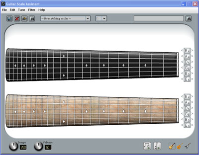

Links
About Guitar Scale Assistant
Getting Started
Using the Clickable Fretboard
Searching for Scales
Viewing Scales
Using the Tuners
Using the Audio Interface
Getting Started

Fig. 1 The main application window
The main Guitar Scale Assistant window contains two fretboards, a clickable fretboard and a display fretboard. The top fretboard is used to enter your patterns or chords to search for, create new scales, or select chords to hear over scales. The bottom fretboard is for display only. Any scales you select to view will be displayed on the bottom fretboard. Each fretboard also has it's own tuning map, allowing you to tune the guitars to any tuning.
The top toolbar is used to create, search, or display different scales. The bottom toolbar is used to control the audio aspects of the application, allowing you to control tempo and volume, play scales and chords, and even select between acoustic, clean jazz, and electric guitars.
< Prev | Next >